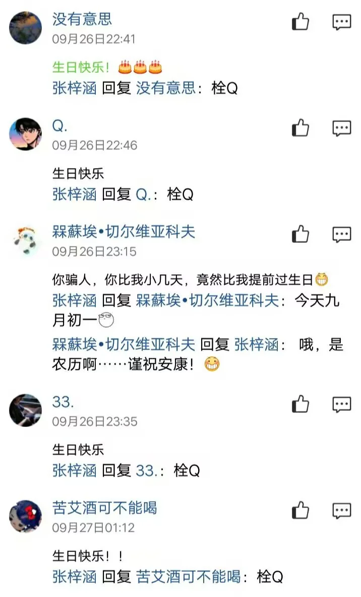

Journal · 2022-10-01
江西省九江市
2001 年，有个赣北庐陵人编写过一本史录，记录的是从「文革」到「改革」时期，黄冈、孝感、咸宁等地的史实，提名为《黄孝咸史录》。
一本私人编撰的地方史，三个地名拼成一个书名，像把三块拼图摁在一起。黄冈、孝感、咸宁——在鄂东的地图上，这三个地方并不接壤，但在历史的某个切面上，它们共享了一段相同的经历。
巧合的是，十年后的 2011 年，这三个地方的中考开始联合命题，史称「黄孝咸中考」。一本史录和一场中考，两个完全不相干的事件，却共享同一个名字。文字一旦进入世界，就有了自己的生命，会以你完全预想不到的方式生长、繁殖、变异。
《黄孝咸史录》→「黄孝咸中考」。从私人记忆到公共制度。这中间横跨的十年，是整个国家变化最快的十年。

In 2001, a man from Luling in northern Jiangxi compiled a historical record documenting events in Huanggang, Xiaogan, and Xianning from the Cultural Revolution to the Reform era. He titled it The Huang-Xiao-Xian Historical Record.
A privately compiled local history, three place names fused into a single title. On the map of eastern Hubei, these three places don't border each other, but in a particular slice of history, they shared the same experience.
By coincidence, ten years later in 2011, these three places began jointly setting their high school entrance exams, which became known as the "Huang-Xiao-Xian Exam." A historical record and a standardized test—two completely unrelated events, sharing the same name. Once words enter the world, they take on a life of their own.
The Huang-Xiao-Xian Historical Record → "The Huang-Xiao-Xian Exam." From private memory to public institution. The decade between them was the fastest-changing decade in the country's history.
En 2001, un homme de Luling, dans le nord du Jiangxi, compila un document historique relatant les événements de Huanggang, Xiaogan et Xianning, de la Révolution culturelle à l'ère des Réformes. Il l'intitula Chronique historique de Huang-Xiao-Xian.
Une histoire locale compilée à titre privé, trois noms de lieux fondus en un seul titre. Sur la carte de l'est du Hubei, ces trois endroits ne se touchent pas, mais dans une certaine coupe de l'histoire, ils ont partagé la même expérience.
Par coïncidence, dix ans plus tard en 2011, ces trois endroits ont commencé à organiser conjointement leurs examens d'entrée au lycée, connus sous le nom de « l'examen Huang-Xiao-Xian ». Une chronique historique et un examen standardisé—deux événements totalement distincts, partageant le même nom.
Chronique historique de Huang-Xiao-Xian → « L'examen Huang-Xiao-Xian ». De la mémoire privée à l'institution publique. La décennie entre les deux fut la décennie de changement la plus rapide de l'histoire du pays.
Im Jahr 2001 stellte ein Mann aus Luling im Norden Jiangxis eine historische Aufzeichnung zusammen, die Ereignisse in Huanggang, Xiaogan und Xianning von der Kulturrevolution bis zur Reformära dokumentierte. Er betitelte sie Die Huang-Xiao-Xian-Chronik.
Eine privat zusammengestellte Lokalgeschichte, drei Ortsnamen zu einem Titel verschmolzen. Auf der Karte Ost-Hubeis grenzen diese drei Orte nicht aneinander, aber in einem bestimmten Ausschnitt der Geschichte teilten sie dieselbe Erfahrung.
Zufälligerweise begannen diese drei Orte zehn Jahre später, 2011, ihre Aufnahmeprüfungen für die Oberstufe gemeinsam zu gestalten, die als „Huang-Xiao-Xian-Prüfung" bekannt wurden. Eine historische Chronik und eine standardisierte Prüfung—zwei völlig unzusammenhängende Ereignisse mit demselben Namen.
Die Huang-Xiao-Xian-Chronik → „Die Huang-Xiao-Xian-Prüfung". Vom privaten Gedächtnis zur öffentlichen Institution. Das Jahrzehnt dazwischen war das Jahrzehnt des schnellsten Wandels in der Geschichte des Landes.
日记随笔源文本
2001年，有个赣北庐陵人编写过一本史录，记录的是从“文革”到“改革”时期黄冈、孝感、咸宁等地的史实，提名为《黄孝咸史录》。巧合的是，十年后该地的中考，史称“黄孝咸中考”。